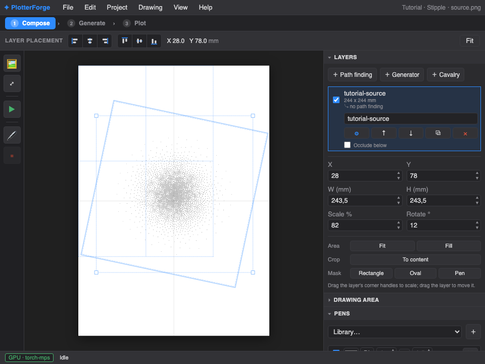
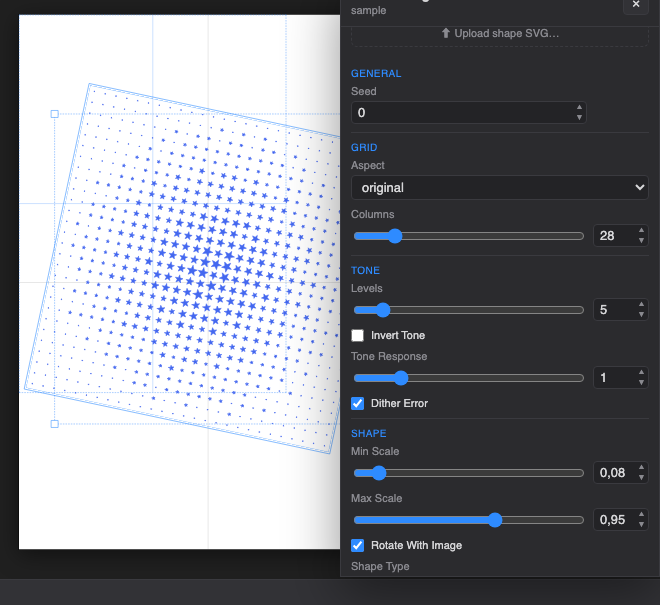

Three drawings, start to finish
These are controlled experiments, not tours. Start with the supplied source, enter the listed values, and stop at each checkpoint. Once your result matches, replace one choice at a time with your own.
{kind=link}
Photo → Voronoi Stippling → SVG
Outcome: one clean black stipple layer on A3, ready for SVG export. Allow about five minutes for the first run; the exact generation time depends on the active CPU/GPU backend.
- Create a clean project. Choose Project → New project… and name it Tutorial · Stipple. A separate project makes every checkpoint reversible and keeps your own work untouched.
- Import the source. Use File → Import image… and choose
tutorial-source.png. The image becomes a selected raster layer, centred and fitted without cropping. - Open Path Finding. Click the layer’s ⚙, choose Voronoi Stippling, leave Region on Whole image, and choose Paths for Display.
Exact settings
| Group | Setting | Value |
|---|---|---|
| General | Seed | 0 |
| Voronoi Sampling | Point Density / Point Limit | 500 / 0 |
| Voronoi Sampling | Luminance Power / Density Power | 5 / 5 |
| Voronoi Sampling | Iterations / Accuracy / Ignore White | 8 / 80 / on |
| Stippling | Stipple Size | 0.9 |
| Image | Brightness / Contrast | 1 / 1 |
- Render the final geometry. Click Apply / Regenerate. Wait until the layer badge says clean and the status bar returns to Ready.
- Check the page. Close Path Finding. In Layers choose Area → Fit, set Rotate to
0°, and confirm the selected bounds stay inside the paper. - Set the physical pen. In Pens, keep one enabled black round pen at
0.5 mm. The preview should remain legible at Fit Page zoom. - Export SVG. Choose File → Export SVG. Open the result in a vector viewer and confirm its dimensions match the Drawing Area in millimetres.
Checkpoint
The selected layer reports Voronoi Stippling · clean; the centre contains the densest dots, the white corners are nearly empty, and the status bar shows a non-zero shape count and path length.

Generator → multi-pen poster
Outcome: an A3 Spokes & Circles composition distributed across three physical pens. This route needs no image.
- Create Tutorial · Generator, click ＋ Generator, and select Spokes & Circles.
- In Drawing Area choose A3 portrait. In Pens add three enabled pens named Dark, Mid, and Accent, all at their real measured widths.
- Enter the values below, then click ✦ Generate. Generator switching is deliberate: changing the generator itself never redraws until you press Generate.
Exact settings
| Group | Setting | Value |
|---|---|---|
| Spokes & Circles | Spokes / Length / Rotation | 8 / 6 cm / 0° |
| Spokes & Circles | Circles / Segments / Outer radius | 20 / 90 / 3.6 cm |
| Spokes & Circles | Crop radius / Rays | 3.8 cm / 128 |
| Pens | Pen Cycle / Spokes / Circles | on / on / per_cluster |
| Pens | Circle stagger / Order / Offset | 1 / forward / 0 |
| Output | Final Scale / Squarify | 1 / off |
Checkpoint
The page contains eight radial clusters and background rays; the Pens panel shows non-zero usage for all three enabled pens. Save a Version named Baseline · 3 pens before experimenting with rotation or distortion.

Image → Shape Dither
Outcome: a blue star grid with five quantized tone states, Floyd–Steinberg texture, and quarter-turn rotations following the image gradient.
- Create Tutorial · Shape Dither, import
tutorial-source.png, open the raster layer’s ⚙, and choose Shape Dither. - Set Display to Paths. Use the values below and click Apply / Regenerate.
Exact settings
| Group | Setting | Value |
|---|---|---|
| Grid | Aspect / Columns | original / 28 |
| Tone | Levels / Tone Response | 5 / 1 |
| Tone | Invert / Dither Error | off / on |
| Shape | Min Scale / Max Scale | 0.08 / 0.95 |
| Shape | Rotate With Image / Shape Type | on / star |
| Colour | Shape Color / Background | #2563eb / disabled |
Expected result

For a custom symbol, click Upload shape SVG…. Start with one closed, centred shape and no background rectangle. Re-run the same settings before adding multiple Cavalry-baked states.
Estimate and Pre-flight
- Open 3 Plot and inspect Estimate. A shape count, drawn distance, travel distance and duration must all be present.
- If travel dwarfs drawing distance, try Nearest + reverse paths. Re-estimate before choosing 2-opt on dense work.
- Confirm paper size and orientation, then Home, jog to the intended origin, and test Pen up/down over scrap.
- Use ▶ Preview to watch pen order and travel moves. Only then load the final paper and press Start.